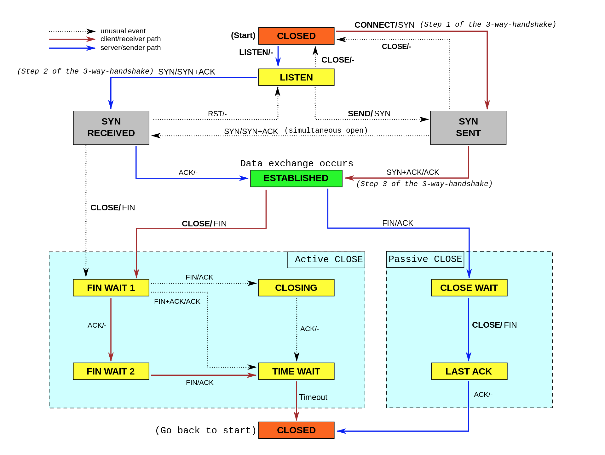
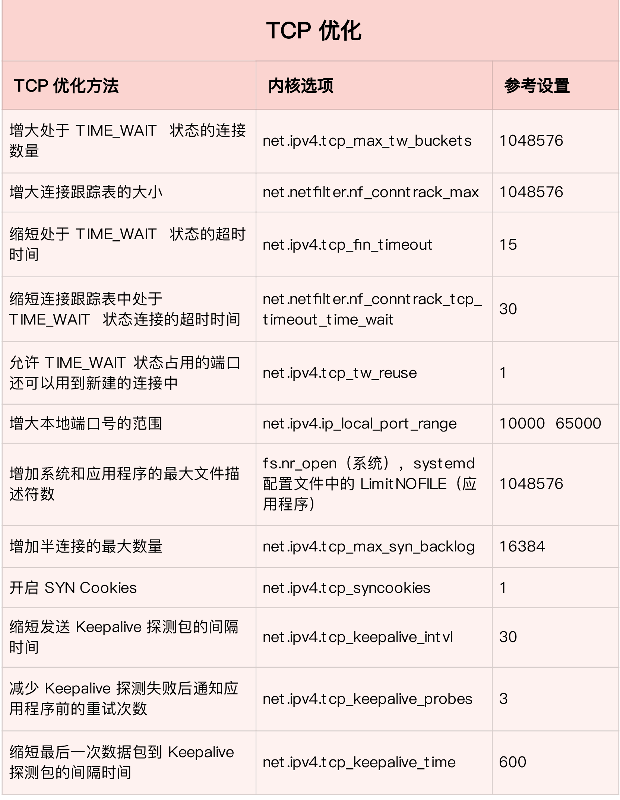

- 00 开篇词 别再让Linux性能问题成为你的绊脚石.md.html
- 01 如何学习Linux性能优化？.md.html
- 02 基础篇：到底应该怎么理解“平均负载”？.md.html
- 03 基础篇：经常说的 CPU 上下文切换是什么意思？（上）.md.html
- 04 基础篇：经常说的 CPU 上下文切换是什么意思？（下）.md.html
- 05 基础篇：某个应用的CPU使用率居然达到100%，我该怎么办？.md.html
- 06 案例篇：系统的 CPU 使用率很高，但为啥却找不到高 CPU 的应用？.md.html
- 07 案例篇：系统中出现大量不可中断进程和僵尸进程怎么办？（上）.md.html
- 08 案例篇：系统中出现大量不可中断进程和僵尸进程怎么办？（下）.md.html
- 09 基础篇：怎么理解Linux软中断？.md.html
- 10 案例篇：系统的软中断CPU使用率升高，我该怎么办？.md.html
- 11 套路篇：如何迅速分析出系统CPU的瓶颈在哪里？.md.html
- 12 套路篇：CPU 性能优化的几个思路.md.html
- 13 答疑（一）：无法模拟出 RES 中断的问题，怎么办？.md.html
- 14 答疑（二）：如何用perf工具分析Java程序？.md.html
- 15 基础篇：Linux内存是怎么工作的？.md.html
- 16 基础篇：怎么理解内存中的Buffer和Cache？.md.html
- 17 案例篇：如何利用系统缓存优化程序的运行效率？.md.html
- 18 案例篇：内存泄漏了，我该如何定位和处理？.md.html
- 19 案例篇：为什么系统的Swap变高了（上）.md.html
- 20 案例篇：为什么系统的Swap变高了？（下）.md.html
- 21 套路篇：如何“快准狠”找到系统内存的问题？.md.html
- 22 答疑（三）：文件系统与磁盘的区别是什么？.md.html
- 23 基础篇：Linux 文件系统是怎么工作的？.md.html
- 24 基础篇：Linux 磁盘I_O是怎么工作的（上）.md.html
- 25 基础篇：Linux 磁盘I_O是怎么工作的（下）.md.html
- 26 案例篇：如何找出狂打日志的“内鬼”？.md.html
- 27 案例篇：为什么我的磁盘I_O延迟很高？.md.html
- 28 案例篇：一个SQL查询要15秒，这是怎么回事？.md.html
- 29 案例篇：Redis响应严重延迟，如何解决？.md.html
- 30 套路篇：如何迅速分析出系统I_O的瓶颈在哪里？.md.html
- 31 套路篇：磁盘 I_O 性能优化的几个思路.md.html
- 32 答疑（四）：阻塞、非阻塞 I_O 与同步、异步 I_O 的区别和联系.md.html
- 33 关于 Linux 网络，你必须知道这些（上）.md.html
- 34 关于 Linux 网络，你必须知道这些（下）.md.html
- 35 基础篇：C10K 和 C1000K 回顾.md.html
- 36 套路篇：怎么评估系统的网络性能？.md.html
- 37 案例篇：DNS 解析时快时慢，我该怎么办？.md.html
- 38 案例篇：怎么使用 tcpdump 和 Wireshark 分析网络流量？.md.html
- 39 案例篇：怎么缓解 DDoS 攻击带来的性能下降问题？.md.html
- 40 案例篇：网络请求延迟变大了，我该怎么办？.md.html
- 41 案例篇：如何优化 NAT 性能？（上）.md.html
- 42 案例篇：如何优化 NAT 性能？（下）.md.html
- 43 套路篇：网络性能优化的几个思路（上）.md.html
- 44 套路篇：网络性能优化的几个思路（下）.md.html
- 45 答疑（五）：网络收发过程中，缓冲区位置在哪里？.md.html
- 46 案例篇：为什么应用容器化后，启动慢了很多？.md.html
- 47 案例篇：服务器总是时不时丢包，我该怎么办？（上）.md.html
- 48 案例篇：服务器总是时不时丢包，我该怎么办？（下）.md.html
- 49 案例篇：内核线程 CPU 利用率太高，我该怎么办？.md.html
- 50 案例篇：动态追踪怎么用？（上）.md.html
- 51 案例篇：动态追踪怎么用？（下）.md.html
- 52 案例篇：服务吞吐量下降很厉害，怎么分析？.md.html
- 53 套路篇：系统监控的综合思路.md.html
- 54 套路篇：应用监控的一般思路.md.html
- 55 套路篇：分析性能问题的一般步骤.md.html
- 56 套路篇：优化性能问题的一般方法.md.html
- 57 套路篇：Linux 性能工具速查.md.html
- 58 答疑（六）：容器冷启动如何性能分析？.md.html
- 加餐（一） 书单推荐：性能优化和Linux 系统原理.md.html
- 加餐（二） 书单推荐：网络原理和 Linux 内核实现.md.html
- 用户故事 “半路出家 ”，也要顺利拿下性能优化！.md.html
- 用户故事 运维和开发工程师们怎么说？.md.html
- 结束语 愿你攻克性能难关.md.html
- 捐赠
44 套路篇：网络性能优化的几个思路（下）
你好，我是倪朋飞。
上一节，我们学了网络性能优化的几个思路，我先带你简单复习一下。
在优化网络的性能时，你可以结合 Linux 系统的网络协议栈和网络收发流程，然后从应用程序、套接字、传输层、网络层再到链路层等每个层次，进行逐层优化。上一期我们主要学习了应用程序和套接字的优化思路，比如：
在应用程序中，主要优化 I/O 模型、工作模型以及应用层的网络协议；
在套接字层中，主要优化套接字的缓冲区大小。
今天，我们顺着 TCP/IP 网络模型，继续向下，看看如何从传输层、网络层以及链路层中，优化 Linux 网络性能。
网络性能优化
传输层
传输层最重要的是 TCP 和 UDP 协议，所以这儿的优化，其实主要就是对这两种协议的优化。
我们首先来看TCP协议的优化。
TCP 提供了面向连接的可靠传输服务。要优化 TCP，我们首先要掌握 TCP 协议的基本原理，比如流量控制、慢启动、拥塞避免、延迟确认以及状态流图（如下图所示）等。

关于这些原理的细节，我就不再展开讲解了。如果你还没有完全掌握，建议你先学完这些基本原理后再来优化，而不是囫囵吞枣地乱抄乱试。
掌握这些原理后，你就可以在不破坏 TCP 正常工作的基础上，对它进行优化。下面，我分几类情况详细说明。
第一类，在请求数比较大的场景下，你可能会看到大量处于 TIME_WAIT 状态的连接，它们会占用大量内存和端口资源。这时，我们可以优化与 TIME_WAIT 状态相关的内核选项，比如采取下面几种措施。
增大处于 TIME_WAIT 状态的连接数量 net.ipv4.tcp_max_tw_buckets ，并增大连接跟踪表的大小 net.netfilter.nf_conntrack_max。
减小 net.ipv4.tcp_fin_timeout 和 net.netfilter.nf_conntrack_tcp_timeout_time_wait ，让系统尽快释放它们所占用的资源。
开启端口复用 net.ipv4.tcp_tw_reuse。这样，被 TIME_WAIT 状态占用的端口，还能用到新建的连接中。
增大本地端口的范围 net.ipv4.ip_local_port_range 。这样就可以支持更多连接，提高整体的并发能力。
增加最大文件描述符的数量。你可以使用 fs.nr_open 和 fs.file-max ，分别增大进程和系统的最大文件描述符数；或在应用程序的 systemd 配置文件中，配置 LimitNOFILE ，设置应用程序的最大文件描述符数。
第二类，为了缓解 SYN FLOOD 等，利用 TCP 协议特点进行攻击而引发的性能问题，你可以考虑优化与 SYN 状态相关的内核选项，比如采取下面几种措施。
增大 TCP 半连接的最大数量 net.ipv4.tcp_max_syn_backlog ，或者开启 TCP SYN Cookies net.ipv4.tcp_syncookies ，来绕开半连接数量限制的问题（注意，这两个选项不可同时使用）。
减少 SYN_RECV 状态的连接重传 SYN+ACK 包的次数 net.ipv4.tcp_synack_retries。
第三类，在长连接的场景中，通常使用 Keepalive 来检测 TCP 连接的状态，以便对端连接断开后，可以自动回收。但是，系统默认的 Keepalive 探测间隔和重试次数，一般都无法满足应用程序的性能要求。所以，这时候你需要优化与 Keepalive 相关的内核选项，比如：
缩短最后一次数据包到 Keepalive 探测包的间隔时间 net.ipv4.tcp_keepalive_time；
缩短发送 Keepalive 探测包的间隔时间 net.ipv4.tcp_keepalive_intvl；
减少Keepalive 探测失败后，一直到通知应用程序前的重试次数 net.ipv4.tcp_keepalive_probes。
讲了这么多TCP 优化方法，我也把它们整理成了一个表格，方便你在需要时参考（数值仅供参考，具体配置还要结合你的实际场景来调整）：

优化 TCP 性能时，你还要注意，如果同时使用不同优化方法，可能会产生冲突。
比如，就像网络请求延迟的案例中我们曾经分析过的，服务器端开启 Nagle 算法，而客户端开启延迟确认机制，就很容易导致网络延迟增大。
另外，在使用 NAT 的服务器上，如果开启 net.ipv4.tcp_tw_recycle ，就很容易导致各种连接失败。实际上，由于坑太多，这个选项在内核的 4.1 版本中已经删除了。
说完TCP，我们再来看 UDP 的优化。
UDP 提供了面向数据报的网络协议，它不需要网络连接，也不提供可靠性保障。所以，UDP 优化，相对于 TCP 来说，要简单得多。这里我也总结了常见的几种优化方案。
跟上篇套接字部分提到的一样，增大套接字缓冲区大小以及 UDP 缓冲区范围；
跟前面 TCP 部分提到的一样，增大本地端口号的范围；
根据 MTU 大小，调整 UDP 数据包的大小，减少或者避免分片的发生。
网络层
接下来，我们再来看网络层的优化。
网络层，负责网络包的封装、寻址和路由，包括 IP、ICMP 等常见协议。在网络层，最主要的优化，其实就是对路由、 IP 分片以及 ICMP 等进行调优。
第一种，从路由和转发的角度出发，你可以调整下面的内核选项。
在需要转发的服务器中，比如用作 NAT 网关的服务器或者使用 Docker 容器时，开启 IP 转发，即设置 net.ipv4.ip_forward = 1。
调整数据包的生存周期 TTL，比如设置 net.ipv4.ip_default_ttl = 64。注意，增大该值会降低系统性能。
开启数据包的反向地址校验，比如设置 net.ipv4.conf.eth0.rp_filter = 1。这样可以防止 IP 欺骗，并减少伪造 IP 带来的 DDoS 问题。
第二种，从分片的角度出发，最主要的是调整 MTU（Maximum Transmission Unit）的大小。
通常，MTU 的大小应该根据以太网的标准来设置。以太网标准规定，一个网络帧最大为 1518B，那么去掉以太网头部的 18B 后，剩余的 1500 就是以太网 MTU 的大小。
在使用 VXLAN、GRE 等叠加网络技术时，要注意，网络叠加会使原来的网络包变大，导致 MTU 也需要调整。
比如，就以 VXLAN 为例，它在原来报文的基础上，增加了 14B 的以太网头部、 8B 的 VXLAN 头部、8B 的 UDP 头部以及 20B 的 IP 头部。换句话说，每个包比原来增大了 50B。
所以，我们就需要把交换机、路由器等的 MTU，增大到 1550， 或者把 VXLAN 封包前（比如虚拟化环境中的虚拟网卡）的 MTU 减小为 1450。
另外，现在很多网络设备都支持巨帧，如果是这种环境，你还可以把 MTU 调大为 9000，以提高网络吞吐量。
第三种，从 ICMP 的角度出发，为了避免 ICMP 主机探测、ICMP Flood 等各种网络问题，你可以通过内核选项，来限制 ICMP 的行为。
比如，你可以禁止 ICMP 协议，即设置 net.ipv4.icmp_echo_ignore_all = 1。这样，外部主机就无法通过 ICMP 来探测主机。
或者，你还可以禁止广播 ICMP，即设置 net.ipv4.icmp_echo_ignore_broadcasts = 1。
链路层
网络层的下面是链路层，所以最后，我们再来看链路层的优化方法。
链路层负责网络包在物理网络中的传输，比如 MAC 寻址、错误侦测以及通过网卡传输网络帧等。自然，链路层的优化，也是围绕这些基本功能进行的。接下来，我们从不同的几个方面分别来看。
由于网卡收包后调用的中断处理程序（特别是软中断），需要消耗大量的 CPU。所以，将这些中断处理程序调度到不同的 CPU 上执行，就可以显著提高网络吞吐量。这通常可以采用下面两种方法。
比如，你可以为网卡硬中断配置 CPU 亲和性（smp_affinity），或者开启 irqbalance 服务。
再如，你可以开启 RPS（Receive Packet Steering）和 RFS（Receive Flow Steering），将应用程序和软中断的处理，调度到相同CPU 上，这样就可以增加 CPU 缓存命中率，减少网络延迟。
另外，现在的网卡都有很丰富的功能，原来在内核中通过软件处理的功能，可以卸载到网卡中，通过硬件来执行。
TSO（TCP Segmentation Offload）和 UFO（UDP Fragmentation Offload）：在 TCP/UDP 协议中直接发送大包；而TCP 包的分段（按照 MSS 分段）和 UDP 的分片（按照 MTU 分片）功能，由网卡来完成 。
GSO（Generic Segmentation Offload）：在网卡不支持 TSO/UFO 时，将 TCP/UDP 包的分段，延迟到进入网卡前再执行。这样，不仅可以减少 CPU 的消耗，还可以在发生丢包时只重传分段后的包。
LRO（Large Receive Offload）：在接收 TCP 分段包时，由网卡将其组装合并后，再交给上层网络处理。不过要注意，在需要 IP 转发的情况下，不能开启 LRO，因为如果多个包的头部信息不一致，LRO 合并会导致网络包的校验错误。
GRO（Generic Receive Offload）：GRO 修复了 LRO 的缺陷，并且更为通用，同时支持 TCP 和 UDP。
RSS（Receive Side Scaling）：也称为多队列接收，它基于硬件的多个接收队列，来分配网络接收进程，这样可以让多个 CPU 来处理接收到的网络包。
VXLAN 卸载：也就是让网卡来完成 VXLAN 的组包功能。
最后，对于网络接口本身，也有很多方法，可以优化网络的吞吐量。
比如，你可以开启网络接口的多队列功能。这样，每个队列就可以用不同的中断号，调度到不同 CPU 上执行，从而提升网络的吞吐量。
再如，你可以增大网络接口的缓冲区大小，以及队列长度等，提升网络传输的吞吐量（注意，这可能导致延迟增大）。
你还可以使用 Traffic Control 工具，为不同网络流量配置 QoS。
到这里，我就从应用程序、套接字、传输层、网络层，再到链路层，分别介绍了相应的网络性能优化方法。通过这些方法的优化后，网络性能就可以满足绝大部分场景了。
最后，别忘了一种极限场景。还记得我们学过的的 C10M 问题吗？
在单机并发 1000 万的场景中，对Linux 网络协议栈进行的各种优化策略，基本都没有太大效果。因为这种情况下，网络协议栈的冗长流程，其实才是最主要的性能负担。
这时，我们可以用两种方式来优化。
第一种，使用 DPDK 技术，跳过内核协议栈，直接由用户态进程用轮询的方式，来处理网络请求。同时，再结合大页、CPU 绑定、内存对齐、流水线并发等多种机制，优化网络包的处理效率。
第二种，使用内核自带的 XDP 技术，在网络包进入内核协议栈前，就对其进行处理，这样也可以实现很好的性能。
小结
这两节课，我们一起梳理了常见的 Linux 网络性能优化方法。
在优化网络的性能时，我们可以结合 Linux 系统的网络协议栈和网络收发流程，从应用程序、套接字、传输层、网络层再到链路层等，对每个层次进行逐层优化。
实际上，我们分析和定位网络瓶颈，也是基于这些网络层进行的。而定位出网络性能瓶颈后，我们就可以根据瓶颈所在的协议层，进行优化。具体而言：
在应用程序中，主要是优化 I/O 模型、工作模型以及应用层的网络协议；
在套接字层中，主要是优化套接字的缓冲区大小；
在传输层中，主要是优化 TCP 和 UDP 协议；
在网络层中，主要是优化路由、转发、分片以及 ICMP 协议；
最后，在链路层中，主要是优化网络包的收发、网络功能卸载以及网卡选项。
如果这些方法依然不能满足你的要求，那就可以考虑，使用 DPDK 等用户态方式，绕过内核协议栈；或者，使用 XDP，在网络包进入内核协议栈前进行处理。
思考
在整个板块的学习中，我只列举了最常见的几个网络性能优化思路。除此之外，一定还有很多其他从应用程序、系统再到网络设备的优化方法。我想请你一起来聊聊，你还知道哪些优化方法吗？
欢迎在留言区跟我讨论，也欢迎你把这篇文章分享给你的同事、朋友。我们一起在实战中演练，在交流中进步。
© 2019 - 2023 Liangliang Lee. Powered by gin and hexo-theme-book.